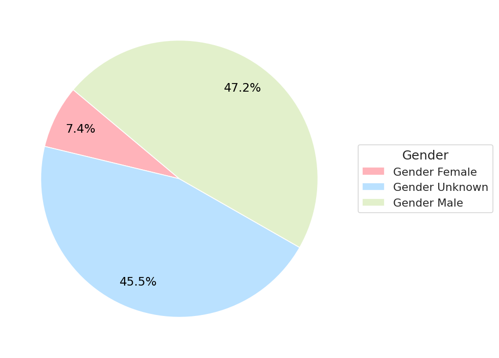

Targets of Terror
Victim Profiles and Perpetrator Motives in Aid Worker Violence (1997–2024)
Humanitarian workers are not just caught in the crossfire — they are often deliberately chosen targets. This section profiles who is most frequently attacked, and who is behind those attacks.
Using structured victim data, we reveal how national staff, UN agencies, and local NGOs bear the brunt of modern violence. Aid workers are targeted not because of what they do — but because of what they represent: international presence, foreign influence, or local dissent.
We also analyze the perpetrators behind these incidents — from state militaries and militias to globally recognized armed groups like the Taliban, Al-Itihaad, LRA, and FARC. Their motives range from political intimidation to economic gain to deliberate obstruction of aid.
Understanding these dynamics is critical: protection begins with profiling the threat and who it targets.
Targeted by Role: Who Bears the Brunt?
This chart shows which types of humanitarian organizations face the greatest physical threats in the field.
- International NGOs (INGOs) and National NGOs (NNGOs) together account for the majority of both fatalities and kidnappings, highlighting their high exposure and frontline presence.
- United Nations staff also represent a significant portion of incidents, reflecting their roles in peacekeeping, logistics, and high-visibility missions.
- Local Red Cross/Crescent (NRCS) and IFRC units, while smaller in scale, experience a measurable volume of threats — suggesting that even neutral, emblem-bearing actors are not spared.
This distribution reveals an important operational truth: no organization type is immune, but those embedded most deeply in local contexts often face the gravest risk.
Gender Breakdown of Victimized Aid Workers

This visualization presents the recorded gender of affected humanitarian workers from 1997 to 2024.
- Male staff make up the majority of recorded victims — reflecting staffing patterns, but also the higher exposure of national male personnel to frontline duties.
- Only 7% of incidents involve women, though the real number is likely underreported due to gaps in gender-disaggregated data.
- Nearly half (47%) of all incidents include no recorded gender, underscoring the need for improved data collection during crisis reporting and monitoring.
Accurate gender tracking is critical not only for understanding risk, but for identifying gender-based violence and designing targeted security protocols for women in the field.
Who Attacks Humanitarian Workers?
This chart highlights the main categories of perpetrators behind attacks on humanitarian personnel from 1997 to 2024.
- The vast majority of attacks are attributed to non-state actors — including armed groups, militias, and insurgents.
- State actors also account for a notable share, often linked to bureaucratic crackdowns, detentions, or violence during protests and regime suppression.
- Unknown actors reflect the reality of chaotic reporting environments, where attribution is difficult or dangerous.
The fact that over 85% of recorded incidents come from non-state and unknown sources reinforces the need for strong local intelligence, negotiated access, and adaptable risk protocols in volatile zones.
Top Perpetrators by Attack Frequency
This chart highlights the top 10 perpetrator groups responsible for the majority of attacks on humanitarian personnel from 1997 to 2024.
- Unknown and unattributed actors account for a vast portion of incidents — a reflection of operating in chaotic, insecure environments where proper attribution is often impossible.
- Named perpetrators include both state-affiliated militaries (e.g., IDF, Russian Armed Forces) and non-state insurgents (e.g., Taliban, Al Shabaab).
- This diversity of actors underscores the multipolar nature of humanitarian threats, where violence can come from official forces, armed factions, or local groups acting independently.
The Anatomy of Targeting
Three dominant patterns define how — and why — humanitarian workers are targeted:
Proximity-Based Risk
National staff remain the most affected, not by accident, but by design: they are the first responders, closest to volatile zones, and often viewed with political suspicion for working with international agencies (Outcomes 2023).Symbolic Violence
Attacks on aid workers often represent broader hostility toward foreign influence or government-aligned institutions. In Gaza, Syria, and Afghanistan, medical and relief workers are increasingly seen as extensions of political agendas (News 2023; Event Data Project (ACLED) 2023).Strategic Targeting by Armed Groups
Perpetrators — from insurgent groups to militaries — now weaponize humanitarianism. Whether through intimidation, kidnapping, or disinformation, aid actors are no longer just collateral — they are the objective (Red Cross (ICRC) 1997).
“These are not accidents of war…
They are deliberate acts of suppression, disruption, and political messaging.”
— Humanitarian Access Watch 2024 (Outcomes 2023)